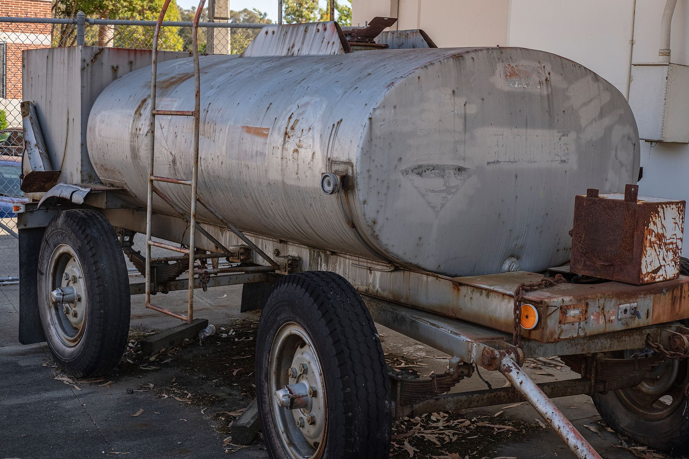

中 헬륨 차단 현실화, 반도체 식각·냉각 공정 비상

중국 정부는 2025년 하반기부터 헬륨을 '전략 자원' 품목으로 분류하고 수출허가 심사 대상에 포함시키는 방안을 검토 중이다. 헬륨은 반도체 이온주입·식각 공정의 캐리어 가스이자 초전도 냉각재로 쓰이며, 대체재가 없는 소재다.
한국의 헬륨 수입 구조는 미국 ExxonMobil·카타르 RasGas가 전체의 약 55%를 공급하고, 나머지 30~35%가 중국 경유 물량이다. 중국이 재수출 통제를 강화하면 이 경유 물량의 납기·단가가 즉각 타격을 받는다.
전 세계 헬륨 생산 설비는 미국(텍사스·캔자스)·카타르·러시아·알제리에 집중되며, 중국은 생산국이 아닌 중간 유통 허브 역할을 한다. 중국이 통제하는 것은 생산량이 아닌 '유통 경로'이므로, 실제 차단 효과는 납기 지연과 거래 비용 상승으로 즉각 나타난다.
삼성전자·SK하이닉스·DB하이텍 등 국내 팹은 월 수십 톤 단위의 헬륨을 소비한다. 현재 국내 헬륨 저장 탱크 용량은 평균 3~4주치에 불과해, 중국발 유통 차단이 현실화되면 8주 이내에 공정 지연이 발생할 수 있다.
중국의 헬륨 통제는 '생산국이 아니어도 공급망을 무력화할 수 있다'는 새로운 전례를 만든다. 갈륨·게르마늄이 채굴·정제 독점을 무기로 삼았다면, 헬륨은 물류·유통 허브 장악으로 같은 효과를 낸다. 소재 조달 담당자들은 이제 원산지뿐 아니라 '경유국 리스크'까지 체크해야 하는 시대가 됐다.
국내 반도체 팹의 헬륨 재활용률은 평균 60~70% 수준이다. 나머지 30~40%는 대기 방출되거나 회수 인프라 부족으로 손실된다. 헬륨 통제 국면에서는 재활용률을 85% 이상으로 높이는 설비 투자가 단순 원가 절감이 아닌 공급망 안보 조치로 격상된다.
카타르 QatarEnergy와 미국 ExxonMobil은 중국 경유 물량 대체 수요가 집중되며 단가 협상력이 강화된다. 특히 카타르발 헬륨은 연간 약 45백만㎥ 규모로, 한국 직도입 계약 확대 시 납기 안정성이 확보된다.
국내 헬륨 회수·재활용 설비 전문업체(진공기술연구소·KNT 등)와 초저온 저장탱크 제조사는 팹의 인프라 투자 확대로 직접 수혜가 예상된다. 헬륨 재활용 설비 시장은 2024년 약 800억원 규모에서 2027년 1,400억원 이상으로 성장할 전망이다.
삼성전자·SK하이닉스·DB하이텍 등 고순도 헬륨 다소비 팹은 중국 경유 물량 차단 시 조달 비용이 즉각 15~25% 상승한다. 현재 헬륨 현물가격은 ㎥당 약 18달러로, 2022년 대비 이미 2.4배 수준이다.
중소 반도체 후공정 업체들은 대형 팹 대비 장기계약 구매력이 약해 현물 시장 의존도가 높다. 중국 경유 유통망이 막히면 이들이 가장 먼저 납기 충격을 받으며, 수율 관리 비용 증가로 이어진다.
중국 경유 헬륨 물량을 보유하고 있다면 지금 당장 계약서의 원산지·경유지 조항을 재검토해야 한다. 카타르·미국 직도입 장기계약(2~3년물) 전환을 우선 검토하되, 단가는 현물 대비 10~15% 프리미엄을 감수하더라도 납기 안정성을 선택해야 한다.
팹 내 헬륨 회수율이 70% 미만이라면 재활용 설비 투자 타당성을 재평가할 시점이다. 초기 설비 투자 비용은 30~50억원이지만, 헬륨 조달 단가가 20% 상승하면 대형 팹 기준 3년 내 손익분기가 가능하다.
헬륨 저장 용량을 현재 3~4주치에서 8~12주치로 확장하는 것이 단기 리스크 헤지의 핵심이다. 저장탱크 증설은 건축 허가 포함 최소 6개월이 소요되므로 지금 착수해야 내년 상반기 전에 완료된다.
실제 조달 현장에서는 — 헬륨은 무색·무취라 재고 관리가 느슨해지기 쉬운 소재다. 현장에서는 '있으면 쓰고 없으면 주문'하는 방식이 만연한데, 이 관행이 통제 국면에서는 치명적이다. 지금 당장 팹별 헬륨 소비 로그를 주 단위로 전환하고, 재활용 손실 포인트를 배관 연결부 중심으로 점검하라.
이 포스팅은 쿠팡 파트너스 활동의 일환으로 수수료를 제공받습니다.